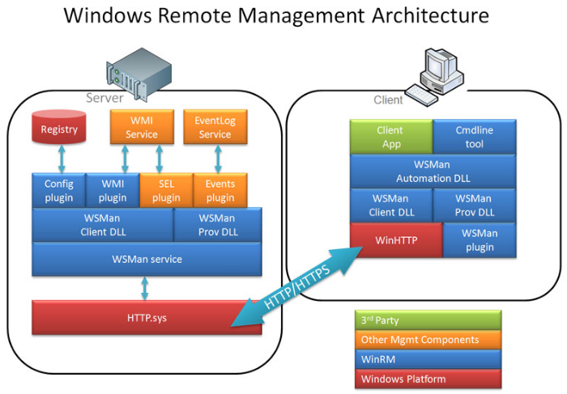

First, some design info. Windows Remote Management is the Microsoft implementation of the WS-Management Protocol. It uses SOAP (Simple Object Access Protocol) over HTTP and HTTPS, and thus is considered a firewall-friendly protocol. It was designed to provide interoperability and consistency for enterprise networks that have a variety of operating systems, to locate and exchange management information.
WinRM provides a command line interface that can be used to perform common management tasks, and also provides a scripting API so you can write your own Windows Scripting Host based scripts. In the background, WinRM relies on management data provided by WMI; however it makes the exchange of data much easier by utilizing the HTTP protocol.
Apart from WMI, WinRM utilizes the Intelligent Platform Management Interface (IPMI) driver for hardware management. The IPMI provider and driver enable you to control and diagnose remote server hardware through BMCs [Baseboard Management Controllers] even when the OS is not running or deployed. Effectively BMC is a chip connected to the processor board of a server; it has its own network adapter and hence can monitor the server in situations even when the server is malfunctioning.
Basic Configuration:
winrm quickconfig
This command performs configuration actions to enable this machine for remote management, which includes:
- Starts the WinRM service
- Set the WinRM service type to auto start
- Create a listener to accept requests on any IP address
Enable firewall exception for WS-Management traffic (for http only)
To list all the WinRM listeners, run this command:
“Winrm enumerate winrm/config/listener”
You can also get the configuration information of the Service, Client and WinRS by running the following command:
“Winrm get winrm/config”
Now let us look at the different operations that WinRM supports to access WMI data.
The list of currently supported operations is:
GET
PUT
ENUMERATION
INVOKE
Using the WinRM get command you can also query different services configuration running on the server.
Example
“Winrm get wmicimv2/Win32_Service?Name=spooler”
You can also use the WinRm get command to query the remote computer:
“Winrm get Winrm/config –r:remotemachinename”
Run this to query the service of remote computer:
“Winrm get wmicimv2/Win32_Service?Name=spooler –r:remotemachinename”
To reboot a remote machine:
“winrm invoke reboot wmicimv2/Win32_OperatingSystem -r:<some computer>”
Start a service on a remote machine
“winrm invoke startservice wmicimv2/Win32_Service?name=w32time -r:<some computer>”
